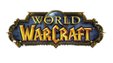

World of Warcraft
Archivierte Anleitung
Dieser Artikel wurde archiviert, da er - oder Teile daraus - nur noch unter einer älteren Ubuntu-Version nutzbar ist. Diese Anleitung wird vom Wiki-Team weder auf Richtigkeit überprüft noch anderweitig gepflegt. Zusätzlich wurde der Artikel für weitere Änderungen gesperrt.
Zum Verständnis dieses Artikels sind folgende Seiten hilfreich:
World of Warcraft (kurz WoW) ist ein kommerzielles Fantasy-Rollenspiel, genauer MMORPG, bei dem viele Benutzer auf einmal in großen 3D-Spielwelten über das Internet spielen können. Ziel dieser Anleitung ist es, World of Warcraft  und dessen Erweiterung The Burning Crusade zum fehlerfreien Betrieb unter Ubuntu mit Hilfe von Wine zu bewegen.
und dessen Erweiterung The Burning Crusade zum fehlerfreien Betrieb unter Ubuntu mit Hilfe von Wine zu bewegen.
Installation¶
Vorbereitung¶
Zunächst ist es notwendig Wine zu installieren [1]. Eine Übersicht über die Kompatibilität mit den jeweiligen Wine-Versionen erhält man in der Wine Application Database  .
.
Methode 1: Installation von CD¶
Nachdem die erste CD eingelegt wurde, muss die Installation gestartet werden, indem man die auf der CD enthaltene Installer.exe mit Wine ausführt [3]. Gibt es keine Probleme beim Wechseln der CDs, so kann die Installation wie gewohnt zu Ende geführt werden.
Sollte es beim Wechseln der CDs jedoch zu Fehlermeldungen kommen, muss der gesamte Inhalt der CDs in ein Verzeichnis auf der Festplatte kopiert werden. Da es bei den einzelnen CDs vorkommt, dass Dateien mehrfach existieren, müssen diese jedesmal überschrieben werden. Nachdem alle CDs aus dem Laufwerk entfernt wurden, kann die Installation durch das Ausführen der Installer.exe mit Wine gestartet werden [3].
Hinweis:
Der Installer kann einige Zeit bei 100% CPU-Auslastung hängen. Nach einigen Minuten wird die Installation jedoch fortgeführt.
Methode 2: Windows-Installation verwenden¶
Eine unter Windows installierte Version kann einfach auf eine Linuxpartition kopiert werden und lässt sich von dort aus problemlos starten. Bei dieser Vorgehensweise werden jedoch keine Registry-Einträge angelegt.
Methode 3: Installation mit Blizzard-Installer¶
Um den Blizzard-Installer für World of Warcraft oder World of Warcraft: The Burning Crusade herunterladen zu können, muss man sich zunächst auf World of Warcraft Europe mit seinen Spielerdaten anmelden. Nun kann die Installer.exe mit Wine ausgeführt werden [3].
Hinweis:
Es ist erforderlich, dass bei einer eventuell vorhandenen Firewall oder einem Router der benötigte Port freigeschaltet bzw. weitergeleitet wird. Dieser lautet 3724. Weiterhin ist zu beachten, dass auf Grund der großen Datenmengen, die heruntergeladen werden müssen, diese Methode nur für eine schnelle Internetanbindung geeignet ist.
Konfiguration¶
Registry-Einträge bearbeiten¶
Durch die Bearbeitung der Registry-Einträge sollte die Leistung des Spiels sichtlich erhöht werden. Um sie bearbeiten zu können, muss zunächst der Registry Editor durch den Befehl
regedit
geöffnet werden. Anschließend müssen folgende Schritte ausgeführt werden:
Rechtsklick auf "HKEY_CURRENT_USER\Software\Wine\ -> Neu -> Schlüssel" und diesen in "OpenGL" umbennenen.
In den Schlüssel "OpenGL" wechseln und in das rechte Feld rechtsklicken, anschließend per "Neu -> Zeichenfolge" diese in "DisabledExtensions" umbennenen.
Doppelklick auf "DisabledExtensions" und in "Daten" "GL_ARB_vertex_buffer_object" eintragen.
Config.wtf bearbeiten¶
Da World of Warcraft standardmäßig DirectX nutzt und dies bei vielen Wine-Nutzern die Leistung des Spiels beeinträchtig, ist es empfehlenswert, das Spiel im OpenGL-Modus starten zu lassen. Dazu wird die Datei Config.wtf benötigt, welche regulär unter ~/.wine/drive_c/Programme/World of Warcraft/WTF/ zu finden ist. Sollte die Datei nicht existieren, muss das Spiel zunächst gestartet und sich in einen bestehenden Account eingewählt werden. Die Datei muss in einem Editor geöffnet [2] und um folgende Zeile ergänzt werden:
SET gxApi "opengl"
Ein Anhängen des Arguments -opengl beim Starten wird durch diesen Eintrag überflüssig.
Besitzer einer Nvidia-Grafikkarte können darüber hinaus Anti-Aliasing aktivieren, indem man zunächst die Zeile
SET ffxGlow "0"
hinzufügt und anschließend die "NVIDIA X Server Settings" durch den Befehl nvidia-settings aufruft. Dort wechselt man in den Reiter "Antialiasing Settings", aktiviert "Override Application Setting" und verschiebt den Regler auf die gewünschte Stufe.
Wine konfigurieren¶
Um Wine zu konfigurieren, verwendet man dessen Konfigurationswerkzeug winecfg [1]. Dort aktiviert man folgende Optionen:
| Anwendungen | Windows-Version: Windows XP; Falls WoW mit einem schwarzen Bildschirm beim starten hängen bleibt, hat es bei einigen Benutzern geholfen, die Windows-Version auf Windows 98, ME oder NT zu setzen. |
| Grafik | Erlaube dem Fenstermanager die Fenster zu kontrollieren. Unterstützung für Vertex Shader: Hardware Pixel Shader aktivieren (wenn von Hardware unterstützt) |
Spiel starten¶
Das Spiel kann entweder aus dem Menü heraus über "Anwendungen -> Wine -> Programme -> WORLD OF WARCRAFT -> World of Warcraft" oder mit dem Befehl [3]:
wine "Pfad/zur/Datei/Launcher.exe"
gestartet werden.
Spiel starten per Script (Karmic)¶
Das folgende Script löst mehrere Probleme auf einen Schlag:
1. "Stotternde" Charakteranimation beim Laufen/Reiten wenn (wie standardmäßig) "Keyboard auto repeat" aktiv ist.
2. In der Standard-Tastaturkonfiguration funktionieren die Akzenttasten in WoW nicht, da man hierzu die "nodeadkeys" Tastaturkonfiguration benötigt.
3. Während des Spielens wird ausserdem statt Compiz als Windowmanager Metacity verwendet.
#!/bin/sh metacity --replace & gconftool -t bool -s /desktop/gnome/peripherals/keyboard/repeat false setxkbmap -variant nodeadkeys wine "C:\Programme\World of Warcraft\WoW.exe" -opengl gconftool -t bool -s /desktop/gnome/peripherals/keyboard/repeat true setxkbmap -variant "" compiz --replace &
Problemlösungen¶
Endbenutzerlizenzvereinbarung lässt sich nicht bestätigen¶
Dieses Problem kann bei der Installation auftreten. Es kann durch die Verwendung der neuesten (oder einer älteren) Wine-Version behoben werden.
Fehlende Dateien auf der DVD¶
Es kann vorkommen, dass beim Einlegen der DVD einige für die Installation notwendige Dateien scheinbar fehlen. Dieser Fehler kann sowohl bei dem Hauptspiel als auch bei den Erweiterungen auftreten. Abhilfe schafft das Einbinden der DVD mittels
sudo mount -t auto -o ro,unhide,uid=1000,gid=1000 /dev/scd0 /media/cdrom0/
Grafikfehler¶
Sollten Grafikfehler oder ähnliches auftreten, kann das Hinzufügen folgender Zeilen in die Datei Config.wtf helfen:
SET ffxDeath "0" SET ffxGlow "0"
Bei manchen Grafikkarten weist das Bild neonartige Farben auf. Diesem Problem kann man begegnen, indem man die Config.wtf außerdem um folgende Zeilen erweitert:
SET pixelShaders "0" SET M2UsePixelShaders "1" SET M2UseShaders "0"
Soundfehler¶
Bei Soundfehlern ist es möglich, dass diese durch Hinzufügen folgender Zeilen in die Datei Config.wtf behoben werden:
SET SoundOutputSystem "1" SET SoundBufferSize "150"
Sollten die Fehler weiterhin bestehen, kann man bei SET SoundBufferSize weitere Werte im Bereich zwischen 50 und 250 testen.
Wenn das beim Wechsel auf einen anderen Desktop oder beim Focuswechsel zu einer anderen Anwendung der Ton von WoW weggeht und auch nicht mehr wiederkommt, muss im Spiel selbst in den Audioeinstellungen ein Haken bei "Sound im Hintergrund" gesetzt werden.
Fehlende Texturen bei Ati¶
Werden mit dem neuen fglrx-Treiber die Texturen nicht angezeigt, allerdings die Partikeleffekte im Hauptmenü vor einem schwarzen Hintergrund, dann kann es helfen, die Option SET M2UseShaders "0" in die Config.wtf zu schreiben.
Absturz beim Ändern der Grafikeinstellungen¶
Im OpenGL-Modus kann es passieren, dass das Spiel abstürzt nachdem man die Grafikeinstellungen verändert hat. Lösen kann man das Problem indem man das Addon Apply To Forehead in den Unterordner Interface/Addons im World of Warcraft-Ordner kopiert und dieses im Charakterauswahl-Bildschirm aktiviert.
Das Addon deaktiviert folgende Funktion:
Set MultisampleFormat
Hängt beim Login mit "Downloading"¶
Als Lösung genügt es, WoW einmal nicht mit dem Argument -opengl, sondern mit -d3d9 zu starten (und ggf. in der config.wtf gxapi "opengl" rauszunehmen). Dann kann die Dialogbox, dass Systeminfos an Blizzard übertragen werden, angezeigt werden. Danach läuft die OpenGL-Version auch wieder.
Programm startet nicht / beendet sich sofort¶
In der Regel macht es grundsätzlich Sinn - und das gilt für praktisch alle Spiele - den 3D-Desktop vor dem Spielen zu beenden. z.B.:Select-> Window Manager-> Metacity
Updates/Patches¶
Sollte es Probleme bei der Installation der Updates/Patches geben, ist es hilfreich in der Konfiguration von Wine,
als Betriebssystem Windows NT4.0 zu wählen: "Wine -> Konfiguriere Wine -> Anwendungen -> Windows Versionen". Nach erfolgreicher Installation, kann man dann wieder auf das gewünschte Betriebssystem in Wine wechseln.

Infobox¶
| World of Warcraft | |
| Genre: | MMORPG (Massively Multiplayer Online Role-Playing Game) |
| Sprache: |      |
| Veröffentlichung: | 2004 |
| Entwickler: | Blizzard Entertainment |
| Systemvoraussetzungen: | Internet (mind. 56-k-Internetanbindung), min. 1 GHz, 512 MB RAM, 6 GB freier Festplattenspeicher, 3D-Grafikkarte mit min. 32 MB |
| Medien: | CDs (4), DVD, Download |
| Läuft mit: | Wine |

- Erstellt mit Inyoka
-
 2004 – 2017 ubuntuusers.de • Einige Rechte vorbehalten
2004 – 2017 ubuntuusers.de • Einige Rechte vorbehalten
Lizenz • Kontakt • Datenschutz • Impressum • Serverstatus -
Serverhousing gespendet von